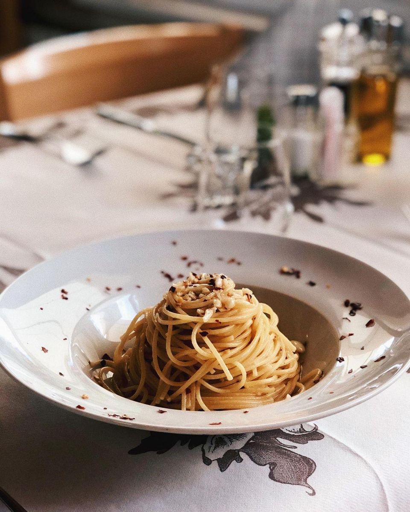
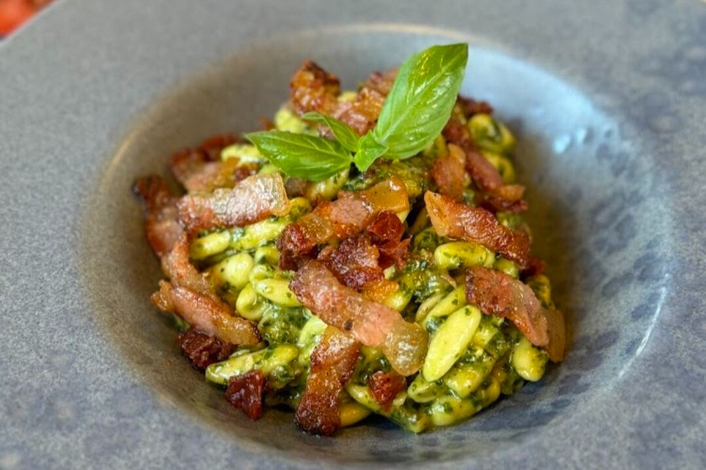

Scialatielli alla Nerano 25.–
Frittierte Zucchini, Basilikum, Parmesan, Provola.
Neapolitanische Pizza, Pasta, Fleischspezialitäten, italienische Dolci und Gelati. Dazu Weine aus dem Wallis und aus Italien. An der Furkastrasse 100, mit Terrasse.

Italienische Klassiker, frisch zubereitet. Dazu kommen wechselnde Tagesempfehlungen, die Ihnen das Team gerne am Tisch vorstellt.
Frittierte Zucchini, Basilikum, Parmesan, Provola.

Hausgemachtes Pesto, Guanciale, Dörrtomaten.

Bolognese, Béchamel, Mozzarella, Parmesan.
Frische Teigwaren, über ein Dutzend Varianten.
Pizze, frische Pasta, Risotti, Fleisch vom heissen Stein und Dolci. Alle Preise in CHF.
«Wir freuen uns, Sie in dieser kleinen Ecke Italiens begrüssen zu dürfen.»
Von Pasta bis zur typischen neapolitanischen Pizza verwöhnen wir Sie mit den unverwechselbaren Aromen der mediterranen Tradition, ohne unsere Fleischspezialitäten und unsere köstlichsten italienischen Desserts und Glaces zu vergessen.
In unserer Weinauswahl treffen Walliser und italienische Aromen aufeinander. Das Bellevue entstand aus der Leidenschaft und dem Wunsch, unser Konzept der italienischen Küche ins Oberwallis zu bringen.
Sie finden uns direkt an der Furkastrasse in Lax, drinnen in der rustikalen Stube oder draussen auf der Terrasse.
Reservation am einfachsten per Telefon. Dienstag ist Ruhetag.
Saisonale Änderungen möglich. Im Zweifel kurz anrufen.
Restaurant Pizzeria Bistro Bellevue
Furkastrasse 100
3994 Lax VS